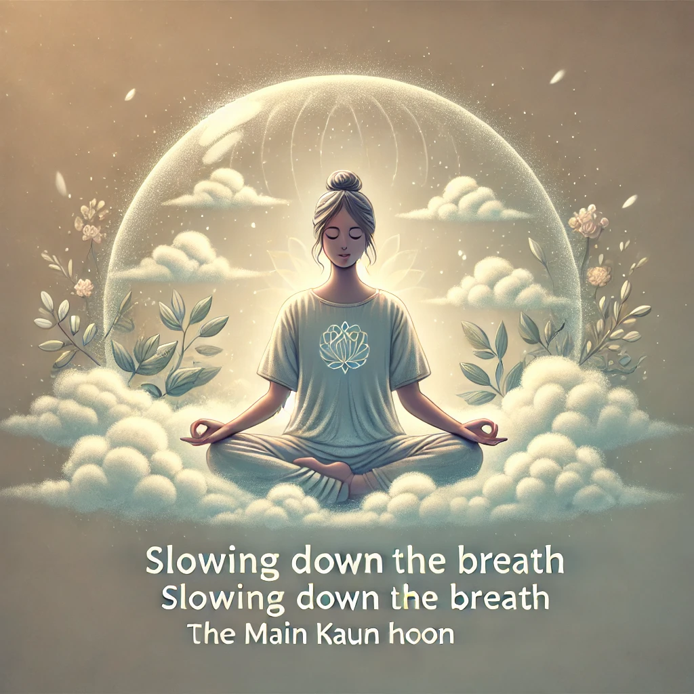

This meditation, from Osho's series "Main Kaun Hoon" (Who Am I?), focuses on breath awareness and self-inquiry. The goal is to reach a deeper state of consciousness by observing the relationship between breath, emotions, and the question of self-identity.
How to practice: Download the audio and follow these steps for your meditation.
Sit comfortably with your eyes closed and focus on your natural breath. Observe the way your mental state influences your breathing. Do not attempt to control your breath; just be a witness to it.
Gradually begin to slow down your breathing. As you breathe slower and deeper, notice how emotions like anger or anxiety become less powerful. Breath and emotions are deeply connected.
While staying aware of your breath, start to ask the question, "Who am I?" This inquiry will help you go beyond your roles and identities to experience your true self.
Osho recommends practicing this meditation daily, both in the morning and evening, for best results. Consistency will help you achieve a deeper state of self-awareness.